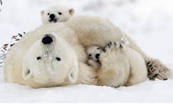
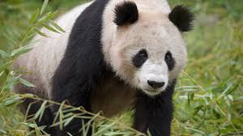
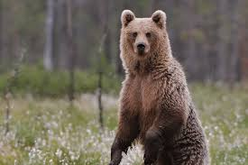
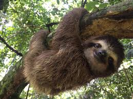

TIPOS DE OSOS
| HÁBITAT |
|---|
DATO CURIOSO
Los osos son animales fascinantes con muchas características únicas. Por ejemplo, tienen un olfato muy desarrollado, pueden caminar sobre sus patas traseras y algunos, como el oso polar, tienen la piel negra bajo su pelaje blanco.
También son omnívoros y pueden ser muy rápidos, llegando a correr a más de 50 km/h.
| POLARES | PANDAS | PARDOS | PEREZOSOS |
|---|---|---|---|

|
 |
 |
 |
| El oso polar u oso blanco es una especie de mamífero carnívoro de la familia de los osos. Es junto con su pariente, el oso Kodiak, uno de los carnívoros terrestres más grandes de la Tierra. Vive en el medio polar y zonas heladas del hemisferio norte. Es el único superdepredador del Ártico. | El panda, oso panda o panda gigante es una especie de mamífero del orden de los carnívoros. El estudio de su ADN lo engloba entre los miembros de la familia de los osos, siendo el oso de anteojos su pariente más cercano, que pertenece a la subfamilia de los tremarctinos | El sobrecogedor oso pardo vive en los bosques y montañas septentrionales de Norteamérica, Europa y Asia. Es la especie de oso más extendida del planeta. Los osos pardos más grandes del mundo se encuentran en la costa de Columbia Británica (Canadá)y Alaska (Estados Unidos) y en islas como Kodiak, también en Alaska. |
Los perezosos (Bradypus) son mamíferos arborícolas conocidos por su lentitud y su pelaje áspero, que puede adquirir tonalidades miel, marrón o gris. Son animales solitarios, nocturnos y arborícolas que viven en las copas de los árboles, donde se alimentan de hojas, flores y ocasionalmente frutas. Su tamaño varía, desde unos 60 cm de largo y 5-7 kg de peso. |
Derechos reservados
Dulce Maria Sanchez Erasto